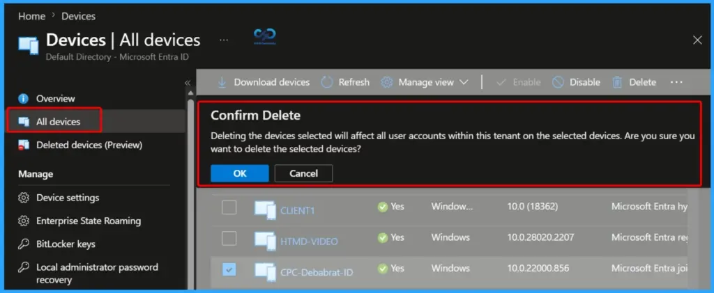
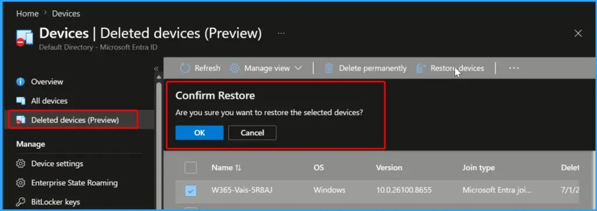

Key Takeaways
- Recover deleted Microsoft Entra devices within 30 days instead of losing them permanently due to accidental deletion.
- Preserves BitLocker recovery keys, Windows LAPS passwords, and device identity, making device restoration seamless.
- Supported for Microsoft Entra joined, Hybrid joined, and Entra registered devices.
- Restoration is available only through Microsoft Graph API or PowerShell and requires Cloud Device Administrator, Intune Administrator, or Global Administrator permissions.
- Devices not restored within 30 days are permanently deleted, along with all associated BitLocker recovery keys and Windows LAPS passwords.
Restore Deleted Microsoft Entra Devices Without Losing BitLocker or LAPS Data using Device Soft Delete! When a device is soft deleted, Microsoft Entra ID doesn’t erase it immediately. Instead, it disables the device so it can no longer sign in or access company resources. The device also disappears from the Microsoft Entra admin center and Intune, so administrators can’t manage it until it is restored.
Table of Content
Restore Deleted Microsoft Entra Devices Without Losing BitLocker or LAPS Data using Device Soft Delete
In hybrid environments, Microsoft Entra Connect can automatically restore a soft-deleted device if it detects that the device was accidentally removed from the sync scope and later reappears. This helps avoid duplicate device objects and protects valuable device credentials during synchronisation changes.
- Delete a Device in the Microsoft Entra Admin Center
- Sign in to the Microsoft Entra admin center.
- Navigate to Devices > All devices.
- The All devices page displays all devices registered or joined to your organization.
- Select the device you want to delete by checking the box next to its name.
- Click Delete from the top menu.
- A Confirm Delete dialog appears with the following warning:
- “Deleting the selected devices will affect all user accounts within this tenant on those devices. Are you sure you want to delete the selected devices?”
- Click OK to confirm and delete the selected device.
| Soft-Deleted Device | Description |
|---|---|
| Authentication Disabled | The device can’t authenticate or access Microsoft Entra ID-protected cloud resources. |
| Management Blocked | The device object can’t be modified or updated using Intune or other management tools. |
| Hidden from Management | The device is hidden from the Microsoft Entra admin center, Intune, and Microsoft Graph. Graph queries return an HTTP 404 (Not Found) error. |
| Device ID Reserved | The device’s DeviceId remains reserved. Another device can’t register using the same DeviceId until the soft-deleted device is restored or permanently deleted. |
| Counts Toward Directory Quota | Soft-deleted devices still count toward the Microsoft Entra directory object quota, but only as a tombstone object, which counts as one-quarter of an active device object. |
| Automatic Permanent Deletion | If the device isn’t restored within 30 days, it is automatically hard deleted, and all associated data is permanently removed. |

Supported Device Types for Device Soft Delete
During the preview, Device Soft Delete supports Microsoft Entra joined, Microsoft Entra hybrid joined, and Microsoft Entra registered devices. This includes enterprise-managed devices that are either directly joined to Microsoft Entra ID or synchronized from on-premises Active Directory, as well as personal (BYOD) devices registered with a work or school account.
- Unsupported Device Types
- Devices without a recognized trust type, such as devices created directly using the Microsoft Graph API.
- Secure virtual machines (VMs) with managed identities.
- Non-persistent Virtual Desktop Infrastructure (VDI) instances.
- Printers and certain other specialty device types.
| User Role | Action |
|---|---|
| Cloud Device Administrator | Can soft delete, restore, and permanently delete any Microsoft Entra device. |
| Intune Administrator | Can soft delete, restore, and permanently delete any Microsoft Entra device. |
| Global Administrator | Has full control to soft delete, restore, and permanently delete any Microsoft Entra device. |
| Device Owner | Can soft delete only their own device but cannot restore or permanently delete it. |
Restore a Soft-Deleted Device using Microsoft Graph API or Microsoft Graph PowerShell
If a device is accidentally deleted, it can be restored within 30 days rather than recreated from scratch. During the preview, administrators must use Microsoft Graph API or Microsoft Graph PowerShell to restore the device. Still, there is a restore option in the Microsoft Entra admin center.
After the device is restored, it becomes active again and can be used normally. Users may need to sign in again or restart the device so it can reconnect to Microsoft Entra ID. If the device is managed by Intune, its compliance status is initially marked as Not Compliant and automatically updates after the device checks in with Intune.
Administrators can verify whether a device is soft-deleted by using:
- Microsoft Graph API – Query the deleted items endpoint (GET /directory/deletedItems/microsoft.graph.device) to list all soft-deleted devices.
- Microsoft Graph PowerShell – Use the Microsoft Graph PowerShell module to retrieve and manage soft-deleted device objects.
- In the Microsoft Entra admin center, go to Devices > Deleted devices (Preview).
- Select the deleted device you want to restore by checking the box next to it.

Resources
Device soft delete in Microsoft Entra ID (preview) – Microsoft Entra ID | Microsoft Learn
Need Further Assistance or Have Technical Questions?
Join the LinkedIn Page and Telegram group to get the latest step-by-step guides and news updates. Join our Meetup Page to participate in User group meetings. Also, join the WhatsApp Community and the Whatsapp channel to get the latest news on Microsoft Technologies. We are there on Reddit as well.
Author
Anoop C Nair is a Workplace Technology solution architect with 25+ years of experience. Microsoft Certified Trainer. Microsoft MVP from 2015 onwards for consecutive 11+ years! He is a blogger, Speaker, and Founder of HTMD Community and HTMD Conference. His main focus is on Device Management technologies like Intune, Windows, and Cloud PC. He writes about technologies like Intune, SCCM, Windows, Cloud PC, Entra, and Microsoft Security.